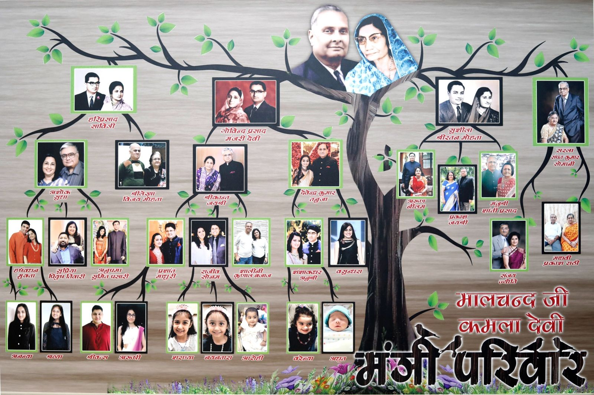

The Main Chhatri
Two storeys with a Shivalaya and the Gaurishankar temple below, on Gaushala Road.
✥A LANDMARK OF CHURU
A place where devotion, artistry and memory meet.
Located on Gaushala Road in Churu, Rajasthan, Mantriyon Ki Chhatri is a historic site associated with the Mantri family. Its two-storey form, temple spaces and painted surfaces offer a glimpse into the cultural world of Shekhawati.
A pillar inscription records that the chhatri was built in 1928 at a cost of ₹6,700, in memory of Chimanaram Ji Mantri. A Shivalaya and the temple of Lord Gaurishankar (Shiva and Parvati) lie beneath it, and a staircase leads to the upper floor. Its main entrance faces east.
The monument is cared for by the Chimanaram Ji Mantri Charitable Trust, formed in 1965, and has been renovated and repainted from time to time to preserve its murals. A second two-storey chhatri of the Mantri family stands nearby on Gaushala Road, close to Tejpal Lohia’s bagichi, with a well beside it.
DISCOVER THE ARCHITECTURE ↗Two storeys with a Shivalaya and the Gaurishankar temple below, on Gaushala Road.
✥Another two-storey chhatri of the family near Tejpal Lohia’s bagichi, with a well beside it.
✥A beautiful, architecturally significant haveli in Churu, well worth visiting.
✥A TRIBUTE TO THE FAMILY
Behind every heritage place are people, relationships and memories. This chapter honours the Mantri family and creates a living archive of the generations connected with its story.
The family tree shared with us identifies Malchand Ji and Kamala Devi as the ancestral couple at its beginning.

The original family-tree artwork is preserved as supplied. A searchable interactive genealogy should be created only after names, spellings and relationships are verified with the family.
CONTENT MANAGEMENT
This is a design preview only. A production CMS needs secure authentication, a connected content store, editorial permissions and publishing workflows.